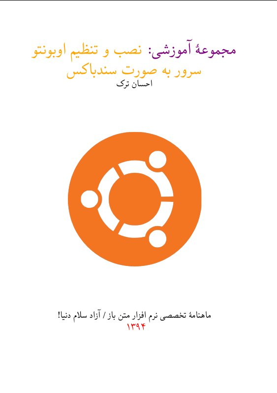

امروزه اینترنت موجب گسترش دانش و نشر دانش شده است، به صورتی که اکثر افراد میتوانند داشتهها و دانستههای خود را در این بستر ارتباطی و رسانهٔ جمعی که خود از قابلیت پوشش دادن به نیازهای چندرسانهای کاربران برخوردار است، با دیگران در میان بگزارند. این مجموعهٔ آموزشی که در حال حاضر در قسمت آخر آن هستیم نیز برای این موضوع نوشته شده است، تا کاربرانی که قصد دارند به توسعهٔ نرمافزار تحت وب یا طراحی صفحات وب پردازند، با اندک هزینهای محیطی ارزان و ساده را برای اجرای نرمافزار و کدهای خود ایجاد کنند. با استفاده از این محیط سندباکس به راحتی میتوان تمامی پروژههای مختلف را اجرا کرد.

با این وجود اگر از یک رزبریپای نیز استفاده میکنید، میتوانید با استفاده از یک سوئیچ یا یک مودم که در منزل دارید، شبکهای بیسیم در منزل خود ایجاد کنید، و رزبریپای را به آن متصل کنید، سپس اوبونتو سرور را بر اساس آموزشی که در این مطلب داده شد نصب کرده و با استفاده از انتقال درگاه یا پورت فورواردینگ، درگاههایی را که در ویرچوالباکس انتقال دادیم، به صورتی انتقال دهید که در تمامی شبکهٔ محلی خود بتوانید به آنان متصل شوید. (این مقاله میتواند برای برخی مواقع مفید باشد) بعد از این شما از یک محیط توسعه برخوردار میشوید که هر وقت و هرگاه خواستید میتوانید به آن متصل شوید. البته در این حالت برای ذخیره اطلاعات پر حجم به یک دیسک سخت با ظرفیت مناسب نیز نیاز خواهید داشت.
در چند روز آینده و در اسرع وقت نسخهٔ پیدیاف از تمامی قسمتها به همراه برخی تغییرات جزئی با استفاده از ابزار زیپرشین و زیلاتک نوشته خواهد شد و در اختیار دوستان قرار خواهد گرفت. کدهایی که برای ایجاد پیدیاف در زیلاتک نوشته شدهاند را نیز به صورت کامل در پایگاه اینترنتی گیتهاب بارگزاری میکنم تا در صورت نیاز بتوانید آن را برای نیاز خودتان تغییر دهید، همچنین در آینده نسخهٔ وبی از آن نیز ممکن است عرضه شود. اگر از سیستمعامل گنو/لینوکس استفاده میکنید، نرمافزار «TeXStudio» نرمافزار خوبی برای نوشتن و گرفتن خروجی پیدیاف از کدهای لاتک و زیلاتک به شمار میآید،خودم شخصاً نتوانستم از طریق نرمافزارهای دیگر در نو/لینوکس این کار را انجام دهم. توزیع من برای نوشتن لاتک و زیلاتک، توزیع آرچ لینوکس است و از نرمافزارهای پیشفرض موجود در داخل مخازن آرچ استفاده کردهام.
همانطور که ذکر شد تمامی پروندههایی که برای گرفتن خروجی PDF در زیلاتک نیاز باشد را در گیتهاب قرار خواهم داد، با این حال نسخهٔ PDF به صورت دیگر با شرایطی که ذکر خواهد شد، در اینترنت قرار میگیرد و نسخهای چاپی از کتاب با دو کیفیت متفاوت نیز به فروش خواهد رسید که برای کاربرانی که میخواهند نسخهٔ چاپی کتاب را بههمراه داشته باشند و با خرید خود کمک مالی کوچکی نیز به نویسنده داشته باشند، مناسب خواهد بود. با این وجود دیگر کاربران نیز میتوانند از طریق حسابی که بعداً در گیتهاب قرار خواهد گرفت به پروژه کمک کنند تا در آینده اگر کمک مالی مناسبی از جانب کاربران دریافت کردم، نسخهٔ ویدئویی آموزش را نیز ارائه دهم. به این دلیل که خوانندگان کاربران در توییتر و جیمیل در خواست داشتند تا این آموزش به صورت ویدئویی ارائه شود تا بهتر بتوانند با آن ارتباط برقرار کنند. هر چند ارائه این ویدئوها با کیفیت مناسب نیازمند امکانات صوتی خوب و وقت بیشتر است، با این حال در صورت دریافت کمکهای مالی در حد کفایت، این آموزش در یوتیوب قرار خواهد گرفت.